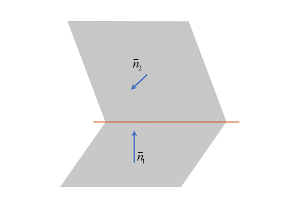

向量代数与空间解析几何
向量代数
向量：既有大小又有方向的量。
在$\mathbb{R}^3$中向量通常表示为：
$$ \begin{split} \boldsymbol{a} &= a_1 \boldsymbol{e}_x + a_2 \boldsymbol{e}_y + a_3 \boldsymbol{e}_z=(a_1,a_2,a_3) ~. \\ \boldsymbol{b} &= b_1 \boldsymbol{e}_x + b_2 \boldsymbol{e}_y + b_3 \boldsymbol{e}_z =(b_1,b_2,b_3) ~. \\ \boldsymbol{c} &= c_1 \boldsymbol{e}_x + c_2 \boldsymbol{e}_y + c_3 \boldsymbol{e}_z =(c_1,c_2,c_3) ~. \end{split} $$向量的点乘，结果是一个数：
$$ \boldsymbol{a}\cdot\boldsymbol{b} = a_1 b_1 +a_2 b_2 + a_3 b_3 ~. $$向量的叉乘，结果是一个向量：
$$ \boldsymbol{a} \times \boldsymbol{b} = \begin{vmatrix} \boldsymbol{e}_x & \boldsymbol{e}_y & \boldsymbol{e}_z \\ a_1 & a_2 & a_3 \\ b_1 & b_2 & b_3 \end{vmatrix} = (a_2 b_3-a_3 b_2)\boldsymbol{e}_x + (a_3 b_1-a_1 b_3)\boldsymbol{e}_y + (a_1 b_2-a_2 b_1)\boldsymbol{e}_z ~. $$两个向量叉乘后得到新的向量的模长：
$$ |\mathbf{c}| = |\mathbf{a}\times \mathbf{b} | = |\mathbf{a}|\cdot|\mathbf{b}|\sin\left(\langle\mathbf{a},\mathbf{b}\rangle \right) $$矢量的叉乘不满足交换律，但具有反对称性：
$$ \mathbf{A}\times \mathbf{B} = -\mathbf{B} \times \mathbf{A} $$向量的混合积，结果是一个数：
$$ (\boldsymbol{a}\times \boldsymbol{b} )\cdot \boldsymbol{c} = \begin{vmatrix} a_1 & a_2 & a_3 \\ b_1 & b_2 & b_3 \\ c_1 & c_2 & c_3 \end{vmatrix} :=[\boldsymbol{a},\boldsymbol{b},\boldsymbol{c} ]~. $$混合积中向量位置交换偶数次符号不变（轮换对称性）：
$$ [\boldsymbol{a},\boldsymbol{b},\boldsymbol{c} ] = [\boldsymbol{b},\boldsymbol{c},\boldsymbol{a} ] =[\boldsymbol{c},\boldsymbol{a},\boldsymbol{b} ]~. $$混合积中向量位置交换奇数次符号反号：
$$ [\boldsymbol{a},\boldsymbol{b},\boldsymbol{c} ] = -[\boldsymbol{b},\boldsymbol{a},\boldsymbol{c} ] = -[\boldsymbol{a},\boldsymbol{c},\boldsymbol{b} ] = -[\boldsymbol{c},\boldsymbol{b},\boldsymbol{a} ]~. $$混合积的绝对值其几何意义就是$\boldsymbol{a},\boldsymbol{b},\boldsymbol{c}$构成的平行六面体的体积 ，其中 $\boldsymbol{a} \times \boldsymbol{b} $的模长与底面平行四边形面积相同。
平面、直线及其方程
三维空间中，$\boldsymbol{e}_x, \boldsymbol{e}_y, \boldsymbol{e}_z$为三个正交的单位矢量（坐标轴）$\Leftrightarrow $ 三个自由度。
一个点：$(x,y,z)$都确定了，三个约束$\Rightarrow $ 零个自由度。
一条(直)线：由两个独立的方程确定，两个约束$\Rightarrow $ 一个自由度。
$$ \left\{\begin{matrix} A_1 x + B_1 y + C_1 z + D_1 = 0 ~, \\ A_2 x + B_2 y + C_2 z + D_2 = 0 ~. \end{matrix}\right. $$一个(平)面：一个独立的方程$F(x,y,z) = 0$ 确定，一个约束$\Rightarrow $ 两个自由度。
-
平面方程
-
一般式：
$$ A x + B y + C z + D = 0~, $$其法向量为$\boldsymbol{n} = (A,B,C)$，要求$A^2+B^2+C^2 \ne 0$，即$A,B,C$不都为0。
-
点法式：
$$ A(x-x_0) + B(y-y_0)+ C(z-z_0) = 0~, $$它与一般是本质没有任何区别，其中一般式的$D = -Ax_0 -B y_0 - C z_0$，不过点法式的几何意义更明显，它代表过点$M(x_0,y_0,z_0)$的点且法向量为$\boldsymbol{n} = (A,B,C)$的平面，如图所示。
-
截距式：
$$ \frac{x}{a} + \frac{y}{b} + \frac{z}{c} = 1~, $$它代表过三点$(a,0,0), (0,b,0), (0,0,c)$的平面方程，$a,b,c$分别为平面在三个坐标轴的截距，如图所示，其法向量为$\boldsymbol{n} = (1/a,1/b,1/c)$.
-
-
直线方程
-
一般式：
$$ \left\{\begin{matrix} A_1 x + B_1 y + C_1 z + D_1 = 0 ~, \\ A_2 x + B_2 y + C_2 z + D_2 = 0 ~. \end{matrix}\right. $$其几何意义就是两平面的交线，其中$\boldsymbol{n}_1 = (A_1,B_1,C_1), \boldsymbol{n}_2 = (A_2,B_2,C_2)$：
 -
对称式：
$$ \frac{x-x_0}{l} = \frac{y-y_0}{m} = \frac{z-z_0}{n}~,(l^2+m^2+n^2\ne 0) ~, $$直线过点$M(x_0,y_0,z_0 )$，其中$\boldsymbol{\tau} = (l,m,n)$为方向向量，注意这里虽然有3个方程，但只有两个是独立的。
-
参数式：
$$ \left\{ \begin{matrix} x= x_0 + lt ~, \\ y = y_0 + mt ~, \\ z = z_0 + nt ~, \end{matrix} \right. $$这里有三个方程，但是参数$t$引人了额外的自由度（总共四个变量），所以本质上还是 三个方程$\Rightarrow $ 三个约束 $\Rightarrow $ 一个自由度。
-
-
平面，直线之间的关系
记平面$\Sigma_1, \Sigma_2$为：
$$ \left\{\begin{matrix} \Sigma_1: A_1 x+ B_1 y + C_1 z + D = 0,\boldsymbol{n}_1 = (A_1, B_1, C_1) ~, \\ \Sigma_2: A_2 x+ B_2 y + C_2 z + D = 0,\boldsymbol{n}_2 = (A_2, B_2, C_2) ~. \end{matrix}\right. $$记直线$L_1, L_2$为：
$$ \left\{\begin{matrix} L_1 : \frac{x-x_1}{l_1} = \frac{y-y_1}{m_1} = \frac{z-z_1}{n_1}~,\boldsymbol{\tau}_1 = (l_1,m_1,n_1)~, \\ L_1 : \frac{x-x_2}{l_2} = \frac{y-y_2}{m_2} = \frac{z-z_2}{n_2}~,\boldsymbol{\tau}_2 = (l_2,m_2,n_2)~. \end{matrix}\right. $$- $ \Sigma_1 \parallel L_1: \boldsymbol{n}_1 \perp \boldsymbol{\tau}_1 \Rightarrow \boldsymbol{n}_1 \cdot \boldsymbol{\tau}_1 =0, A_1 l_1 +B_1 m_1 + C_1 n_1 = 0 $.
- $ \Sigma_1 \perp L_1: \boldsymbol{n}_1 \parallel \boldsymbol{\tau}_1 \Rightarrow \boldsymbol{n}_1 = \lambda \boldsymbol{\tau}_1 , A_1/ l_1 =B_1/ m_1 = C_1 /n_1 = \lambda $.
- $ L_1\parallel L_2: \boldsymbol{\tau}_1 \parallel \boldsymbol{\tau}_2 \Rightarrow \boldsymbol{\tau}_1 =\lambda \boldsymbol{\tau}_2 =0, l_1/ l_2 =m_1/ m_2 = n_1/ n_2 = \lambda $.
- $ L_1 \perp L_2: \boldsymbol{\tau}_1 \perp \boldsymbol{\tau}_2 \Rightarrow \boldsymbol{\tau}_1 \cdot \boldsymbol{\tau}_2 =0, l_1 l_2 +m_1 m_2 + n_1 n_2 = 0 $.
- $ \Sigma_1 \parallel \Sigma_2: \boldsymbol{n}_1 \parallel \boldsymbol{n}_2 \Rightarrow \boldsymbol{n}_1 =\lambda \boldsymbol{n}_2 =0, A_1 /A_2 =B_1 /B_2 = C_1 /C_2 = \lambda $.
- $ \Sigma_1 \perp \Sigma_2: \boldsymbol{n}_1 \perp \boldsymbol{n}_2 \Rightarrow \boldsymbol{n}_1 \cdot \boldsymbol{n}_2 =0, A_1 A_2 +B_1 B_2 + C_1 C_2 = 0 $.
-
点到平面的距离
对于点$M(x_m,y_m,z_m)$到平面$\Sigma: Ax+By+Cz+D=0$的距离为：
$$ d = \frac{|Ax_m + By_m +Cz_m +D| }{\sqrt{A^2+B^2+C^2}} ~. $$其中平面$\Sigma_1$的法矢量为$\boldsymbol{n} = (A,B,C)$，单位法矢量为$\hat{n} = (\frac{A}{|\boldsymbol{n}| },\frac{B}{|\boldsymbol{n}| },\frac{C}{|\boldsymbol{n}| })$，那么距离$d = |\mathbf{PM} \cdot \hat{n} | = |\mathbf{PM} \cdot \boldsymbol{n} |/|\boldsymbol{n}|$，其中
$$ \mathbf{AM} \cdot \boldsymbol{n} = A(x_m-x_0) + B(y_m-y_0)+ C(z_m-z_0) =Ax_m + By_m +Cz_m +D=0~. $$对于$P(x_0,y_0,z_0)$为平面$\Sigma_1$上任意一点，始终有$D = -Ax_0 -B y_0 - C z_0$.
曲面与空间曲线
-
曲面方程
-
显函数表达式：$z = f(x,y), (x,y)\in D\subset \mathbb{R}^2$.
-
隐函数表达式：$F(x,y,z) = 0$.
-
参数函数表达式：
$$ \left\{\begin{matrix} x = x(u,v) \\ y = y(u,v) \\ z = z(u,v) \end{matrix}\right. ~, (u,v)\in D_{uv}\subset\mathbb{R}^2 $$
-
-
空间曲线
-
参数表达式：
$$ \left\{\begin{matrix} x = x(t) \\ y = y(t) \\ z = z(t) \end{matrix}\right. ~, t\in D\subset\mathbb{R} $$ -
空间曲线作为两个曲面的交线：
$$ \left\{\begin{matrix} F(x,y,z)=0 ~, \\ G(x,y,z)=0 ~. \end{matrix}\right. $$
-
-
旋转曲面
-
旋转面：一条平面曲线绕平面上一条直线旋转。
设$ L$ 是$ yOz$ 平面上一条曲线，其方程是:
$$ \left\{\begin{matrix} f(y,z)=0 ~, \\ x=0 ~. \end{matrix}\right. $$
则有:绕谁转，谁不变，另外一个的平方变平方和.
$L$绕$y$轴旋转所得旋转面方程为$f(y,\pm\sqrt{x^2+z^2})=0$;
$L$绕$x$轴旋转所得旋转面方程为$f(\pm\sqrt{x^2+y^2},z)=0$.
-
柱面：平行于定直线并沿定曲线$\Gamma$移动的直线$L$所形成的轨迹。
设准线$\Gamma $:
$$ \left\{\begin{matrix} f(x,y)=0 ~, \\ z=0 ~. \end{matrix}\right. $$母线平行于$z$轴的柱面方程为$f(x,y)=0$.
-
多元函数微分学
多元函数的极限与连续，微分
-
二元函数，$z = f(x,y)$，定义域$(x,y)\in D \subset \mathbb{R}^2$，二元函数可以看作一个曲面，其往$xOy$平面的投影就是定义域。
类似的，三元函数，$u = f(x,y，z)$，定义域$(x,y,z)\in D \subset \mathbb{R}^3$.
-
重极限：对于$f(x,y)$在$(x,y)\in D$内有定义，点$P_0(x_0,y_0)\in D$，对于$\forall \varepsilon >0, \exists \delta >0$，对于
$$ 0<\sqrt{(x-x_0)^2+(y-y_0)^2 }<\delta $$的一切$P(x,y)\in D$有$|f(x,y)-A|<\varepsilon$，则可以记为：
$$ \lim_{x\to x_0,y\to y_0} f(x,y) = A~. $$ -
连续：对于$f(x,y)$在$(x,y)\in D$内有定义，点$P_0(x_0,y_0)\in D$，如果：
$$ \lim_{x\to x_0, y\to y_0}f(x,y) = f(x_0,y_0) $$则称$f(x,y)$在$P_0 (x_0,y_0)$处连续。
-
偏导数：设$z = f(x,y)$在点$(x_0,y_0)$邻域内有定义，如果
$$ \lim_{\Delta x\to 0} \frac{f(x_0+\Delta x,y_0) - f(x_0,y_0) }{\Delta x} $$存在，则记
$$ f_x' = \frac{\partial f(x_0,y_0)}{\partial x} = \lim_{\Delta x\to 0}\frac{f(x_0+\Delta x,y_0) - f(x_0,y_0) }{\Delta x} $$为函数$z=f(x,y)$在点$(x_0,y_0)$处对$x$的偏导数，类似，可以定义对$y$的偏导数为：
$$ f_y' = \frac{\partial f(x_0,y_0)}{\partial y} = \lim_{\Delta y\to 0}\frac{f(x_0,y_0+\Delta y) - f(x_0,y_0) }{\Delta y}~. $$ -
全微分：如果$z=f(x,y) $在点$(x,y)$处的全增量$\Delta z = f(x+\Delta x,y+\Delta y)-f(x,y)$可表示为
$$ \Delta z = A \Delta x + B \Delta y + \mathcal{O}(\rho)~, $$其中$A,B$不依赖于$\Delta x, \Delta y$，而仅与$x,y$有关，$\rho = \sqrt{(\Delta x)^2 + (\Delta y)^2}$，则称$z = f(x,y) $在点$(x,y)$可微，可以记为：
$$ \mathrm{d}z = A\Delta x + B\Delta y = \frac{\partial z}{\partial x}\mathrm{d}x+\frac{\partial z}{\partial y}\mathrm{d}y~. $$-
第二个等号指明全微分存在的必要条件，即如果$z = f(x,y) $在点$(x,y) $处可微，则其在$(x,y)$处的偏导数$\partial z/\partial x, \partial z/\partial y; $必定存在。
-
全微分存在的充分条件：如果$z = f(x,y)$的偏导数$\partial z/\partial x, \partial z/\partial y; $在点$(x,y)$处连续，则$z=f(x,y)$在该点可微。
-
证明$z = f(x,y)$在$(x_0,y_0)$处可微的一般步骤：
-
先计算$z=f(x,y)$在$(x_0,y_0)$的极限，看是否连续。
-
证明$f(x,y)$连续后，再计算$z=f(x,y)$在$(x_0,y_0)$的偏导数，这里一般用偏导数的定义去算，设 $A = \frac{\partial z}{\partial x}\big|_{(x=x_0,y=y_0)}, B = \frac{\partial z}{\partial y}\big| _{(x=x_0,y=y_0)} $ .
-
最后计算这个极限：
$$ \lim_{\sqrt{(\Delta x)^2+ (\Delta y )^2}\to 0} \frac{f(x_0+\Delta x, y_0 + \Delta y)-f(x_0,y_0) - A \Delta x -B \Delta y}{\sqrt{(\Delta x)^2 + (\Delta y)^2}} $$若极限存在，则可微，若极限不存在，则不可微。
-
-
复合函数的偏导数与全微分
-
多元函数与多元函数复合的偏导数计算：对于$u=u(x,y),v=v(x,y)，z = f\left[u(x,y),v(x,y)\right] $，有
$$ \begin{aligned} \frac{\partial z}{\partial x} &= \frac{\partial z}{\partial u}\frac{\partial u}{\partial x} + \frac{\partial z}{\partial v}\frac{\partial v}{\partial x}~, \\ \frac{\partial z}{\partial y} &= \frac{\partial z}{\partial u}\frac{\partial u}{\partial y} + \frac{\partial z}{\partial v}\frac{\partial v}{\partial y}~. \end{aligned} $$
-
全微分形式不变性：对于$z = f(u,v),u=u(x,y),v=v(x,y)$都具有连续的偏导数，那么$z = f[u(x,y),v(x,y)]$可微：
$$ \begin{matrix} \mathrm{d}z = \frac{\partial z}{\partial x}\mathrm{d}x + \frac{\partial z}{\partial y}\mathrm{d}y\quad \{x,y\} \to \text{variation}. \\ \mathrm{d}z = \frac{\partial z}{\partial u}\mathrm{d}u + \frac{\partial z}{\partial v}\mathrm{d}v\quad \{u,v\} \to \text{variation}. \end{matrix} $$这个关系的证明只需要一点点计算：
$$ \begin{split} \mathrm{d}z &= \frac{\partial z}{\partial x}\mathrm{d}x + \frac{\partial z}{\partial y}\mathrm{d}y\\ & = \left(\frac{\partial z}{\partial u}\frac{\partial u}{\partial x} + \frac{\partial z}{\partial v}\frac{\partial v}{\partial x}\right)\mathrm{d}x+\left(\frac{\partial z}{\partial u}\frac{\partial u}{\partial y} + \frac{\partial z}{\partial v}\frac{\partial v}{\partial y}\right)\mathrm{d}y\\ & = \frac{\partial z}{\partial u}\left(\frac{\partial u}{\partial x}\mathrm{d}x+\frac{\partial u}{\partial y}\mathrm{d}y \right) + \frac{\partial z}{\partial v}\left(\frac{\partial v}{\partial x}\mathrm{d}x+\frac{\partial v}{\partial y}\mathrm{d}y \right)\\ & = \frac{\partial z}{\partial u}\mathrm{d}u + \frac{\partial z}{\partial v}\mathrm{d}v~. \end{split} $$ -
高阶偏导数：
$$ \begin{matrix} \frac{\partial z}{\partial x} = f_x'(x,y) & \frac{\partial z}{\partial y} = f_y'(x,y) \\ \frac{\partial^2 z}{\partial x^2} = f_{xx}''(x,y) & \frac{\partial^2 z}{\partial y^2} = f_{yy}''(x,y) \\ \frac{\partial^2 z}{\partial y \partial x} =\frac{\partial}{\partial y}\left(\frac{\partial z}{\partial x} \right) = f_{xy}''(x,y) & \frac{\partial^2 z}{\partial x \partial y} =\frac{\partial}{\partial x}\left(\frac{\partial z}{\partial y} \right) = f_{yx}''(x,y) \end{matrix} $$- 若函数$z = f(x,y) $的两个混合偏导数$\frac{\partial^2 z}{\partial x \partial y}, \frac{\partial^2 z}{\partial y \partial x} $ 在点$(x_0,y_0 ) $都连续，那么在点$(x_0,y_0)$两个混合偏导数相等.
-
隐函数偏导数与全微分，对于$z = z(x,y)$由曲面$F(x,y,z)=0$决定，那么有：
$$ \frac{\partial z}{\partial x} = - \frac{F_x'}{F_z'}~,\quad\frac{\partial z}{\partial y} = - \frac{F_y'}{F_z'}~. $$得到这个关系只需要把曲面方程$F(x,y,z(x,y))=0$两边同时对$x$求导
$$ F_x'+F_z'\frac{\partial z}{\partial x}=0 \Rightarrow \frac{\partial z}{\partial x}=-\frac{F_x'}{F_z'}. $$对于$\partial z /\partial y$同理。这里注意$F_z^{\prime }$总是在分母上，以及别忘记了负号，如果你感觉不好理解，可以这样看：
$$ \frac{\partial z}{\partial x} \sim \frac{\partial F/\partial x}{\partial F/\partial z}\quad \Rightarrow \frac{\partial z}{\partial x}=-\frac{F_x'}{F_z'}. $$左边把$\partial F$约掉，只需要看$\partial x$永远在分母上。（这是个非常不严谨的方法，如果你觉得这个方法很啰嗦，直接记住或者能在考场上推导正确得到这个关系都没问题）。
方向导数
定义符号$\nabla \equiv (\partial_x,\partial_y,\partial_z) = \mathbf{e}_x\partial_x +\mathbf{e}_y\partial_y +\mathbf{e}_z\partial_z$ 是一个矢量，其中$\partial_x = \frac{\partial}{\partial x}, \partial_y = \frac{\partial}{\partial y},\partial_z = \frac{\partial}{\partial z}$，对于一个标量函数$f(x,y,z)$，其梯度为：
$$ \nabla f(x,y,z) = (\partial_x f,\partial_y f,\partial_z f)=(\partial_x f)\mathbf{e}_x+(\partial_y f)\mathbf{e}_y +(\partial_z f)\mathbf{e}_z $$这是一个矢量函数。
-
对于曲面 $f(x,y,z)=0$ 任意一点，都有 $\nabla f \parallel \mathbf{n}$，其中 $\mathbf{n}$ 为曲面上该点的法向量。
设曲面$\Sigma: f(x,y,z) = 0$，曲面上过任意一点 $M$ 的曲线可以取为$f[x(t),y(t),z(t)]=0 $，那么曲线上 $M$ 点的切向量（也是曲面 $\Sigma$ 的切向量）$\boldsymbol{\tau} = (x^{\prime }(t),y^{\prime }(t),z^{\prime }(t))$，则有
$$ \begin{aligned} \nabla f\cdot \boldsymbol{\tau} &= \partial_x f\cdot x'(t) + \partial_y f\cdot y'(t) +\partial_z f\cdot z'(t) \\ & = \frac{\partial f}{\partial x}\frac{\partial x}{\partial t} + \frac{\partial f}{\partial y}\frac{\partial y}{\partial t}+ \frac{\partial f}{\partial z}\frac{\partial z}{\partial t}\\ & = \frac{\mathrm{d}f}{\mathrm{d}t} =0 . \end{aligned} $$故$\nabla f$ 是曲面 $f(x,y,z)=0$ 的法向量。
-
对于二元函数也类似：
方向导数可以视为梯度与该方向的单位矢量作点乘，也就是梯度在该方向上的投影：
$$ \frac{\partial f}{\partial \hat{n}} = \nabla f\cdot \hat{n}~. $$极值与最值
-
无条件极值
- $f(x,y)$在$M_0(x_0,y_0)$的一阶偏导数存在，且在$(x_0,y_0)$处取极值，则
- 若$M_0(x_0,y_0)$使得$f_x^{\prime }(x_0,y_0)=0,f_y^{\prime }(x_0,y_0)=0$，那么$M_0$是$f(x,y)$的驻点。
极值点一定是驻点，驻点不一定是极值点。
-
取极值的充要条件，设$f_{xx}^{\prime \prime}=A,f_{xy}^{\prime \prime}=B,f_{yy}^{\prime \prime}=C$，那么有：
-
$AC-B^2>0$ ，则有$A>0$时为极小值，$A<0$时为极大值。
-
$AC-B^2<0$无极值。
-
$AC-B^2=0$不确定。
确定有极值时，$AC>0$是一定的，那么可以这样理解，$A>0$时，一阶导数是递增的，有极小值；$A<0$时，一阶导数递减，那么有极大值。
-
-
条件极值
求$f(x,y)$在条件$\varphi(x,y)=0$的情况下的极值的步骤：
-
设拉格朗日函数：$F(x,y,\lambda) = f(x,y)+\lambda \varphi(x,y)$.
-
对拉格朗日函数求偏导数，得到三个方程：
$$ \frac{\partial F}{\partial x} = 0~,\quad \frac{\partial F}{\partial y} = 0~,\quad \frac{\partial F}{\partial \lambda} = 0~. $$ -
三个方程，三个未知数（仅仅上面这个例子是三个），得到的解就是极值点。
-
参考资料：
【1】李永乐，王式安，刘喜波等。考研数学复习全书・基础篇 [M]. 北京：中国农业出版社，2024.
【2】王书彬。高等数学（下册）[M]. 北京：高等教育出版社，2020.